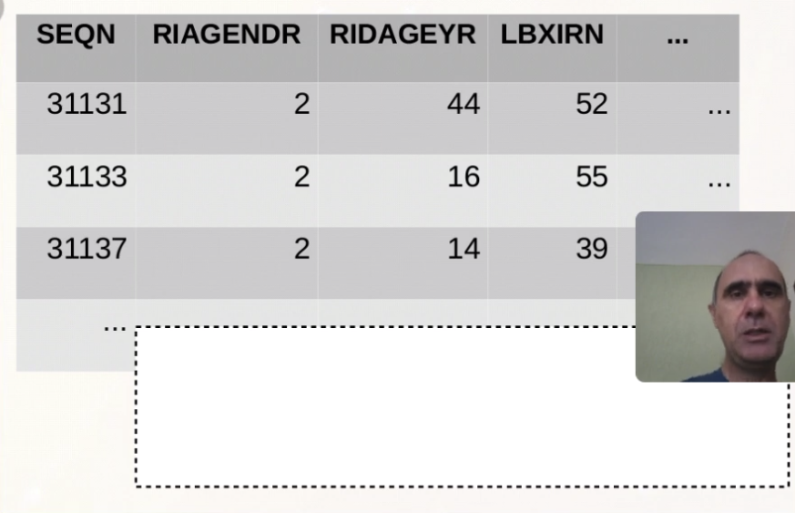
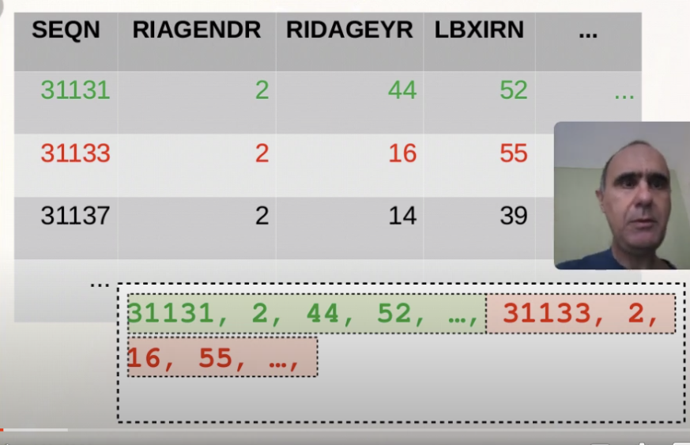
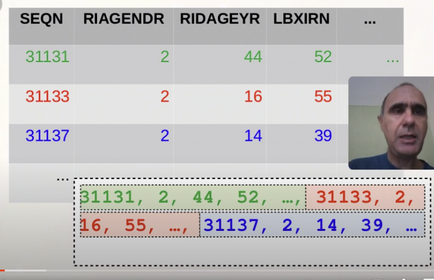
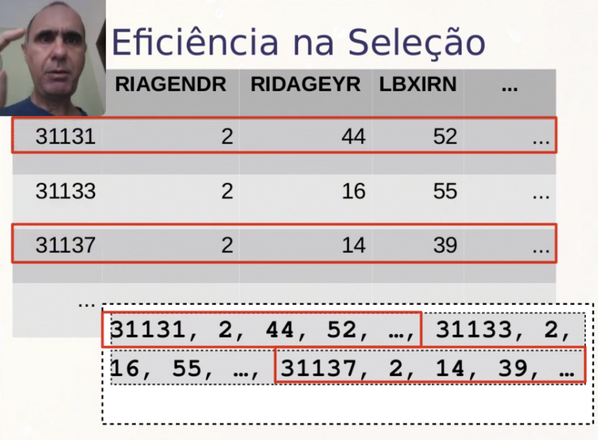
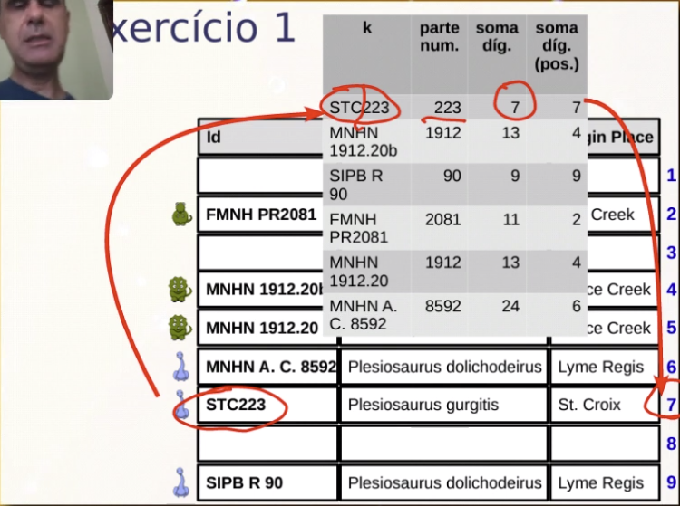
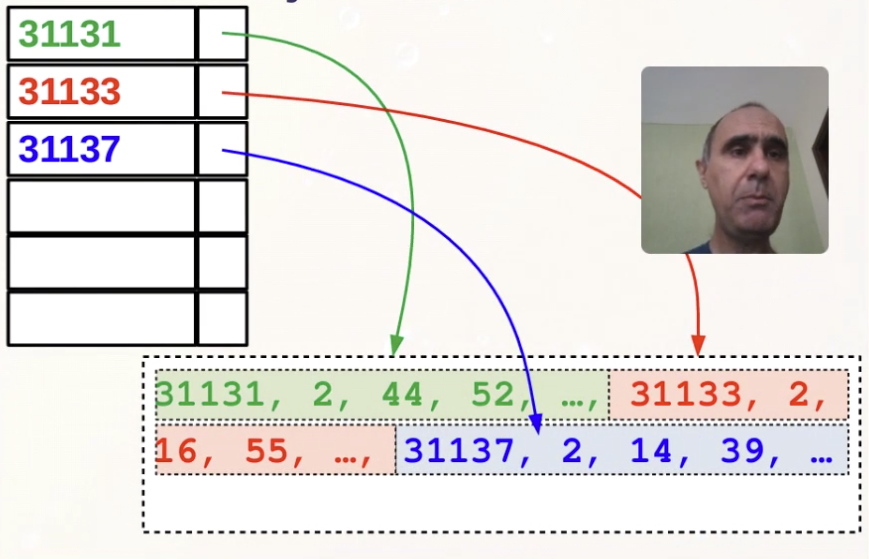
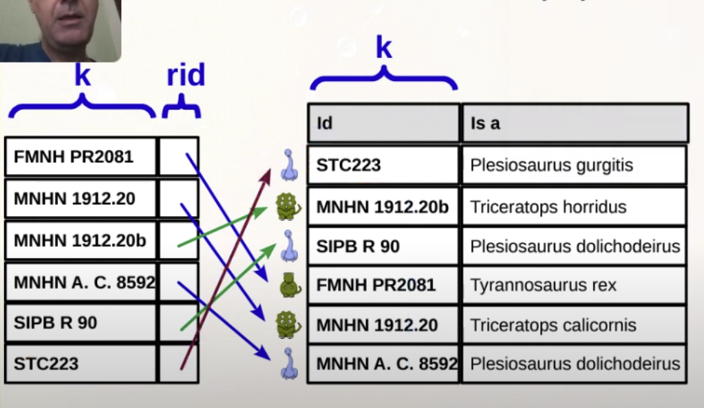
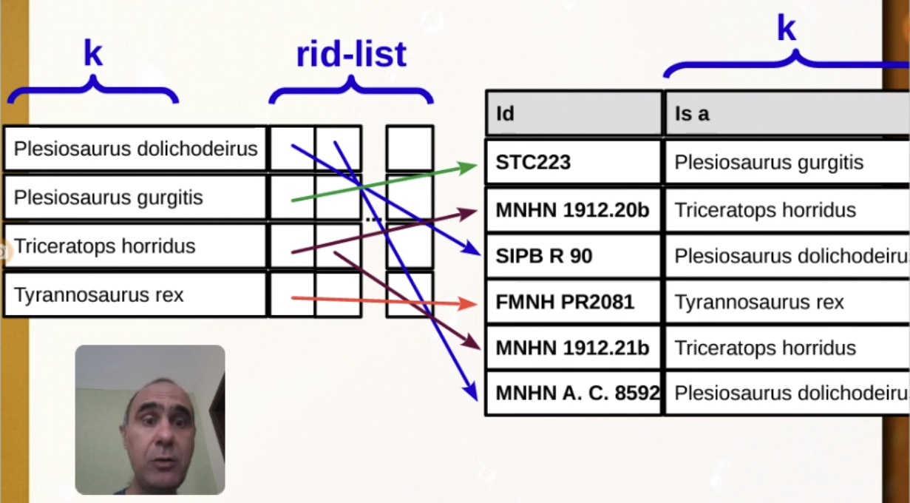

Disciplinas
-
BANCO DE DADOS-T01-2024-1 Concluído
Materiais
Vídeo 2 - Organização dos Dados e Índices - Aula 04/11 - Bancos de Dados 2020.2. sendProfessor ministrante: André Santanchè.
Conteúdo
Estruturas de Índice.
- Um arquivo de registros - abstração para SGBD.
- (Ramakrishnan, 2003).
- Arquivo: abstração criada pelo SO para os blocos de disco.
- Registro: abstração de subdivisão do arquivo criada pela aplicação ou SGBD para o arquivo.
Como Guardar Tabelas?
Passo 1:
Passo 2:
Passo 3:
Ordem dos Registros e Recuperação.
Eficiência na Seleção:  Ordem:Gravação em ordem sequencial de acordo com a chave de busca.
- (Silberschatz, 2006)
Manter uma ordem dos registros no arquivo pode ser custoso.
Heap:Sem ordenação; gravação em qualquer posição.
- (Silberschatz, 2006)
Cálculo de função de hash sobre atributo para definir posição.
Exercício 1.
Dado o arquivo a seguir, proponha uma função hash para posicionar os registros conforme k.
Ex.1:
Ex.2:
 Organização de Arquivos.- Heap.
- sem ordenação.
- gravação em qualquer posição.
- Sequencial.
- gravação em ordem sequencial de acordo com a chave de busca.
- Hash.
- cálculo de função de hash sobre atributo para definir posição.
- (Silberschatz, 2006)
Como tornar o acesso eficiente sem ordenar os registros?
Seleção com Índices.  Processamento de Consulta.- Dada a consulta:
- SELECT nome FROM Pessoa WHERE id=146.
- Se os dados estão espalhados em disco, precisaríamos acessar todos os blocos do arquivo da tabela Pessoa.
- Índices de BDs ajudam neste processo.
- Índices de de BDs funcionam como índices de livros, apontando para a localização do conteúdo.
- Estrutura de dados.
- Organiza registros.
- Otimiza certas operações de recuperação.
- (Ramakrishnan, 2003).
- Entrada de índice (data entry) → registros armazenados em um índice.
- Alternativas para a entrada de índice.
- (1) k* - registro completo com chave k.
- (2) (k, rid)→ rid = id do registro de chave k.
- (3)(k, rid-list)→ rid-list = lista de registros de chave k.
- (Ramakrishnan, 2003).
Passo 1:
Passo 2:
Passo 3:
- Alternativas para a entrada de índice.
- (1) k* - registro completo com chave k.
- (2) (k, rid)→ rid = id do registro de chave k.
- (3)(k, rid-list)→ rid-list = lista de registros de chave k.
- (Ramakrishnan, 2003).
- Vantagens das alternativas (2) e (3):
- mais de um índice para o mesmo arquivo.
- menor: pode-se carregar mais ou inteiro na memória.
- suporta estruturas mais complexas.
Exercício 2.
Nas aulas anteriores, discutimos sobre redundância de informação e seus potenciais problemas. Índices são estruturas que introduzem redundância no banco de dados. Descreva o impacto da introdução deste tipo de redundância em termos de:
- a) Consistência dos dados.
- b) Velocidade de leitura.
- c) Velocidade de gravação.
- Índice primário ou de agrupamento.
- arquivo ordenado sequencialmente.
- chave de busca define ordem do arquivo.
- Índice secundário.
- índice de não agrupamento.
- índice não necessariamente único.
Índice Primário.
Entrada do índice (1):
- k* - registro completo com chave k.
Entrada do índice (2):
- (k, rid)→ rid = id do registro de chave k.
Índice Secundário.
Entrada do índice (2):
- (k, rid)→ rid = id do registro de chave k.
Índices Densos e Esparsos.
- Denso.
- uma entrada de indice para cada valor de chave.
- Esparso.
- uma entrada índice para mais de um valor de chave.
Exercício 2.
Em uma relação com 5 atributos, qual o número máximo possível de índices primários e secundários ao mesmo tempo? Justifique.